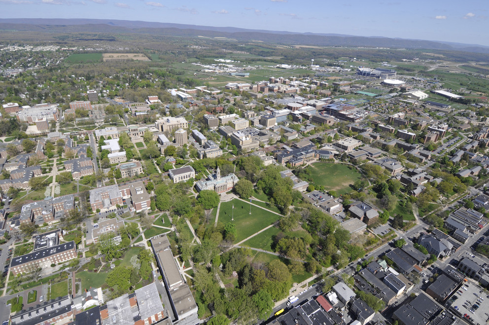

A deeper look at US College reopening strategies, understanding why one size doesn't fit all
By Pat Elliott Oct 2, 2020
COVID-19 shutdown almost every major college and university from practicing in person learning back in March. Summer gave major institutions time to plan for what the fall semester would look should the virus remain prevalent in our society, and it has. Schools must juggle a variety of factors with health & safety being the priority. Other factors have played a role in decison making as well including state and local guidelines, financial impacts, student retention, and even college sports. Three strategies have accounted for the majority of how colleges have reopened. Fully/Primarly Online, Hybrid, and Fully/Primarly In Person
Full/ Primarily Remote
The safest, low risk option amongst health experts. 44% of Colleges & Universities are either fully or primarily online. This has been a popular choice by schools who are located in more urban areas or “hot zones” for cases of COVID-19. The first major US university to take this approach was Harvard University when they announced their decision in July. Some schools have chosen to allow a select group of students to be welcomed onto campus but all classes remain remote. The emphasize has been to give 1st year college students a dorm life experience.
Given the low risk of student to student interaction on campus there have been relativly low amounts of positive cases amongst schools who chose this option. The biggest drawback for them was the greater likleyhood students chose to defer this year, or transfer to another school which gave them the option of in person learing.
Hybrid Models
There is a fluid interpretation of hybrid learning which accounts for 21% of reopening stratagies, to put it simply it is an attempt to give students the opportunity to have in person classes and a college dorm experience, but with large restrictions and limited amount of classes being offered in person, and with those classes meeting at a minimum.
Hybrid learning has been the option that has been preferred amongst students as it creates enough barriers to minimize in class interaction yet still gives students the opportunity to have a college expiernce. This stratagy however is contingent on students taking COVID-19 related protocal and rules seriously which has led to hybrid learning having varying degrees of success. Duke University & University of North Carolina-Chapel Hill are close in proximity and adopted similar appraochs. UNC however was forced to move all their classes to online just one week into the semester due to multiple positive case clusters that broke out as a result of large group gatherings and on campus parties.